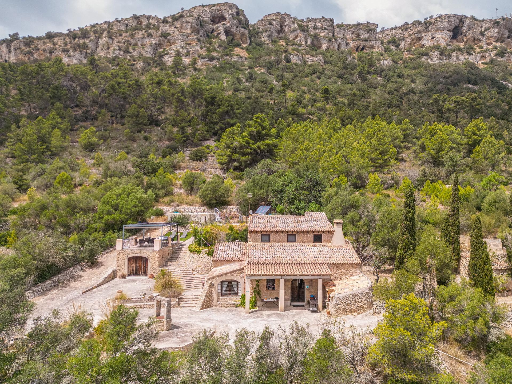

€765.000
Beside Puig de Randa (Llucmajor) · Mallorca · Spain
Punch-above stone brief: authentic 1880 mallorquina stone finca on 2.3 ha ANEI hillside with chimney, stone well, terracing, and a confirmed built private pool facing Puig de Randa. Old mixed with new outdoor living (pergola terrace, solar). Strong value under €800k.
Opened 30 Sep 2026 via Gestpropiedad wp-json + apinmo gallery. Asking €765.000. Ref 02pr001. 290 m² built (168 useful) / 23.000 m² land / 3 bed / 1 bath / year 1880. Body: mallorquina chimney, independent kitchen/dining/salon, pool + solarium with mountain views. Distinct from board llucmajor-* E&V stock.
View listing